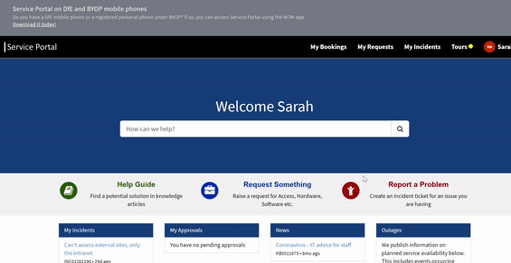
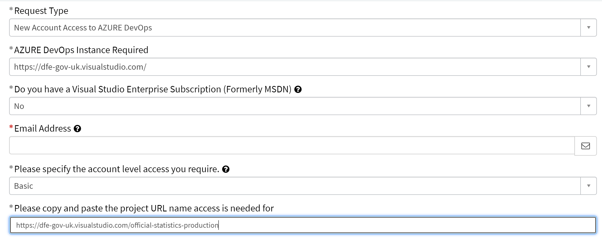

Version controlled final code scripts

What does this mean?
This means having the final copies of code and documentation saved in a Git-controlled Azure DevOps repo. For statistics publications, repos should be held within the official-statistics-production area. Access to DevOps is restricted only to people in DfE with specific account permissions. This is different to GitHub, which makes code publicly available.
If you do not already have Git downloaded, you can download the latest version from their website.
Take a look at the resources for learning Git in the learning resources section.
Why do it?
Having the final copy of the scripts version controlled gives assurance around how the data was created. It also allows teams to easily record any last minute changes to the code after the initial final version by using the version control to log this.
How to get started
The first step is to get your final versions of code and documentation together in a single folder.
For statistics publications, we have a specific area set up for you to host your code in on the dfe-gov-uk instance of Azure DevOps, entitled official-statistics-production.
To gain access to this area, please raise a request on service desk by navigating through the pages detailed in the animation below.

Once you have navigated to this page, fill out the form with the following details and send your request off.

Access is usually granted within a few working days. Alert the Statistics Development Team when this is confirmed, and we will set up your repository and give your team access.
For other areas, you will need to seek access from the relevant DevOps project administrator.
renv
We recommend the use of the renv package to help maintain consistent versions of packages within your work. You can learn more about how to use renv on our R page.
Avoid revealing sensitive information
Here are some general best practice tips:
- Using .gitignore to ignore files and folders to prevent committing anything sensitive
- Never committing outputs unless they’ve been checked over, even aggregates. We suggest only outputting to an output folder which is in the .gitignore file, to ensure this doesn’t happen by mistake
- Keeping datasets and secrets (e.g. API keys) outside the repository as much as possible, make use of secure variables
- Checking Git histories: if someone is planning on open-sourcing code that has previously been in a private repository or only version-controlled locally, you want to be careful not to have anything sensitive in the commit history. You can do this by following the above rules. When in doubt, you can remove the git history and start the public repo without it
- You can remove a file from the entire commit history if you did commit anything sensitive, although you still need to follow the usual procedures if this was a data breach
You can find out more in the Duck Book’s guidance on using Git.